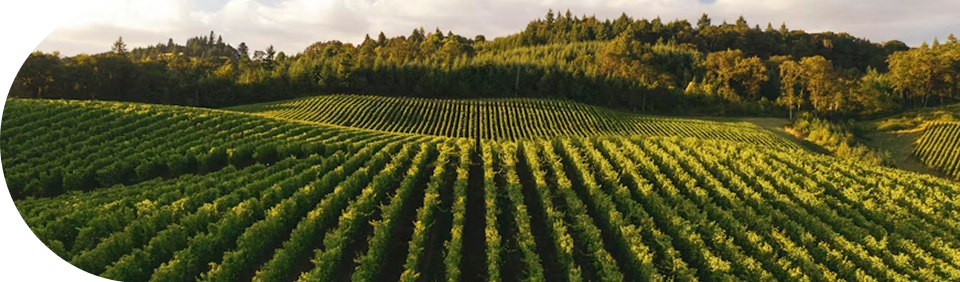
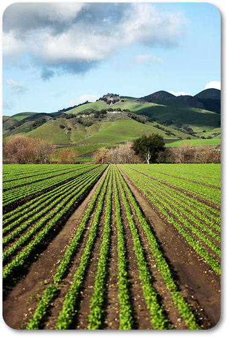
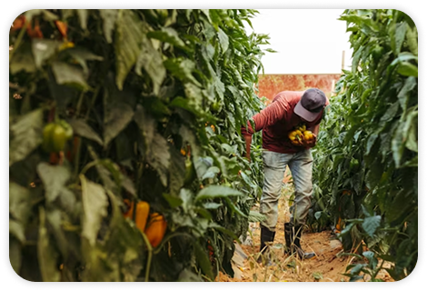

Conecta
Agro
Ligando voçê ao melhor do mercado.

Quem
Somos?
Quem
Somos?
A ConectaAgro é uma empresa criada para impulsionar a evolução da agricultura brasileira por meio da inovação e da tecnologia. Trabalhamos conectando produtores, empresas e oportunidades em uma única plataforma, criando um ambiente moderno, acessível e preparado para atender às necessidades do agronegócio atual. Nosso compromisso é contribuir para um agro mais forte, conectado e eficiente.


Nosso
Propósito
Nosso
Propósito
Nosso propósito é transformar a maneira como o agronegócio se conecta e cresce no Brasil. Buscamos facilitar o acesso à informação, oportunidades e soluções inovadoras, promovendo desenvolvimento, colaboração e crescimento sustentável para todos que fazem parte do setor agrícola.

Público
Alvo
Público
Alvo



A ConectaAgro foi desenvolvida para produtores rurais, empresas do agronegócio, investidores e profissionais que desejam acompanhar a modernização do mercado agrícola. Atendemos pessoas e negócios que procuram inovação, novas conexões e oportunidades para expandir sua atuação no setor.
Benefícios
Benefícios
CONEXÃO
Com a ConectaAgro você consegue se conectar com outros produtores de regiões distantes ou proximas. E buscar soluções para o seu negócio com outros produtores, além de buscar menores preços de produtos e maquinários.
CONEXÃO
Obetenha suporte para tirar suas duvidas com outros produtores e buscar conhecimento atraves das postagens feitas na rede inclusa da ConectaAgro
INCLUSÃO
Na nossa comunidade você produtor rural que tem dificil acesso a outros produtores se sente incluso dentro do mercado e no ambiente da agricultura.
INCLUSÃO
Fique por dentro das mais novas novidades do mercado e no mundo, tenha na palma da sua mão previsões para colheita e plantação, além de variaçoes que acontece no mercado.
A ConectaAgro oferece uma série de benefícios, incluindo acesso a uma ampla rede de contatos, oportunidades de negócios, informações atualizadas sobre o mercado agrícola, ferramentas de gestão e suporte para impulsionar o crescimento e a inovação no setor.